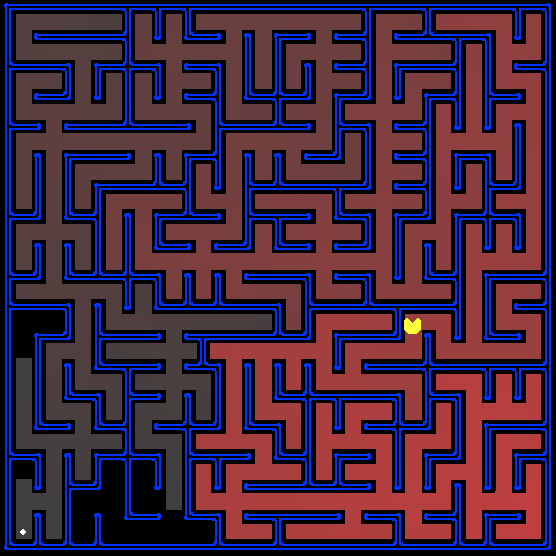

In this project, your Pac-Man agent will find paths through his maze world, both to reach a particular location and to collect food efficiently. You will build general search algorithms and apply them to Pac-Man scenarios.
The GitHub classroom link for this assignment has now been released on D2L. You will use this link to get access to the project repository. Contact the instructors if you have any questions.
This project includes an autograder that you can use to assess your progress in implementing the solutions to the exercises. The autograder can be run with the command:
python autograder.py
The autograder grades your solution to all eight of the problems. Running it will yield output detailing which tests for a particular question passed, and which failed (often with an informative message), and the overall grade for the question. At the end you will see a summary of the grades for all questions. If your tests pass for a question, you will be shown full points for the question. Keep in mind these points are provisional---we examine your code to see how you have gone about things, and we may take away points for sloppy code, code narrowly targeting the tests, lack of documentation, and other outrages.
The code for this project consists of several Python files, some of which you will need to read and understand in order to complete the assignment, and some of which you can ignore.
| Files you'll edit: | |
search.py |
Where all of your search algorithms will reside. |
searchAgents.py |
Where all of your search-based agents will reside. |
| Files you might want to look at: | |
pacman.py |
The main file that runs Pacman games. This file describes a Pacman GameState type, which you use in this project. |
game.py |
The logic behind how the Pacman world works. This file describes several supporting types like AgentState, Agent, Direction, and Grid. |
util.py |
Useful data structures for implementing search algorithms. |
test_cases/ |
Directory containing the test cases for each question |
| Supporting files you can ignore: | |
graphicsDisplay.py |
Graphics for Pacman |
graphicsUtils.py |
Support for Pacman graphics |
textDisplay.py |
ASCII graphics for Pacman |
ghostAgents.py |
Agents to control ghosts |
keyboardAgents.py |
Keyboard interfaces to control Pacman |
layout.py |
Code for reading layout files and storing their contents |
autograder.py |
Project autograder |
testParser.py |
Parses autograder test and solution files |
testClasses.py |
General autograding test classes |
searchTestClasses.py |
Project 1 specific autograding test classes |
What to submit: You will fill in portions of search.py and searchAgents.py during the assignment. These are the only two pacman code files that you need to edit.
Evaluation: Your code will be autograded for technical correctness. Please do not change the names of any provided functions or classes within the code, or you will wreak havoc on the autograder. However, the correctness of your implementation -- not the autograder's output -- will be the final judge of your score. If necessary, we will review and grade assignments individually to ensure that you receive due credit for your work.
Academic Dishonesty: We will be checking your code against other submissions in the class for logical redundancy. If you copy someone else's code and submit it with minor changes, we will know. These cheat detectors are quite hard to fool, so please don't try. We trust you all to submit your own work only; please don't let us down. If you do, we will pursue the strongest consequences available to us.
Getting Help: You are not alone! If you find yourself stuck on something, contact us! Office hours are there for your support; please use them. We want these projects to be rewarding and instructional, not frustrating and demoralizing.
python pacman.py
Note: if you get error messages regarding python-tk, use your package manager to install python-tk, or see this page for more detailed instructions.
Pac-Man lives in a shiny blue world of twisting corridors and tasty round treats. Navigating this world efficiently will be Pac-Man's first step in mastering his domain.
The simplest agent in searchAgents.py is called the GoWestAgent, which always goes West (a trivial reflex agent). This agent can occasionally win:
python pacman.py --layout testMaze --pacman GoWestAgent
python pacman.py --layout tinyMaze --pacman GoWestAgent
tinyMaze, but any maze you want.
Note that pacman.py supports a number of options that can each be expressed in a long way (e.g., --layout) or a short way (e.g., -l). You can see the list of all options and their default values via:
python pacman.py -h
bash commands.txt.
searchAgents.py, you'll find a fully implemented SearchAgent, which plans out a path through Pac-Man's world and then executes that path step-by-step. The search algorithms for formulating a plan are not implemented -- that's your job. As you work through the following questions, you might need to refer to this glossary of objects in the code.
First, test that the SearchAgent is working correctly by running:
python pacman.py -l tinyMaze -p SearchAgent -a fn=tinyMazeSearch
SearchAgent to use tinyMazeSearch as its search algorithm, which is implemented in search.py. Pac-Man should navigate the maze successfully.
Now it's time to write full-fledged generic search functions to help Pac-Man plan routes! Pseudocode for the search algorithms you'll write can be found in the lecture slides and textbook. Remember that a search node must contain not only a state but also the information necessary to reconstruct the path (plan) which gets to that state.
Important note: All of your search functions need to return a list of actions that will lead the agent from the start to the goal. These actions all have to be legal moves (valid directions, no moving through walls).
Hint: Each algorithm is very similar. Algorithms for DFS, BFS, UCS, and A* differ only in the details of how the fringe is managed. So, concentrate on getting DFS right and the rest should be relatively straightforward. Indeed, one possible implementation requires only a single generic search method which is configured with an algorithm-specific queuing strategy. (Your implementation need not be of this form to receive full credit).
Hint: Make sure to check out the Stack, Queue and PriorityQueue types provided to you in util.py!
Question 1 (3 points) Implement the depth-first search (DFS) algorithm in the
depthFirstSearch function in search.py. To make your algorithm complete, write the graph search version of DFS, which avoids expanding any already visited states (textbook section 3.3).
Your code should quickly find a solution for:
python pacman.py -l tinyMaze -p SearchAgent
python pacman.py -l mediumMaze -p SearchAgent
python pacman.py -l bigMaze -z .5 -p SearchAgent
Hint: If you use a Stack as your data structure, the solution found by your DFS algorithm for mediumMaze should have a length of 130 (provided you push successors onto the fringe in the order provided by getSuccessors; you might get 244 if you push them in the reverse order). Is this a least cost solution? If not, think about what depth-first search is doing wrong.
breadthFirstSearch function in search.py. Again, write a graph search algorithm that avoids expanding any already visited states. Test your code the same way you did for depth-first search.
python pacman.py -l mediumMaze -p SearchAgent -a fn=bfs
python pacman.py -l bigMaze -p SearchAgent -a fn=bfs -z .5
Hint: If Pac-Man moves too slowly for you, try the option --frameTime 0.
Note: If you've written your search code generically, your code should work equally well for the eight-puzzle search problem (textbook section 3.2) without any changes.
python eightpuzzle.py
While BFS will find a fewest-actions path to the goal, we might want to find
paths that are "best" in other senses. Consider mediumDottedMaze
and mediumScaryMaze.
By changing the cost function, we can encourage Pac-Man to find different paths. For example, we can charge more for dangerous steps in ghost-ridden areas or less for steps in food-rich areas, and a rational Pac-Man agent should adjust its behavior in response.
Implement the uniform-cost graph search algorithm in
the uniformCostSearch function in search.py. We encourage you to look through util.py for some data structures that may be useful in your implementation. You should now observe successful behavior in all three of the following layouts, where the agents below are all UCS agents that differ only in the cost function they use (the agents and cost functions are written for you):
python pacman.py -l mediumMaze -p SearchAgent -a fn=ucs
python pacman.py -l mediumDottedMaze -p StayEastSearchAgent
python pacman.py -l mediumScaryMaze -p StayWestSearchAgent
Note: You should get very low and very high path costs for the StayEastSearchAgent and StayWestSearchAgent respectively, due to their exponential cost functions (see searchAgents.py for details).
Question 4 (3 points) Implement A* graph search in the empty function aStarSearch in search.py. A* takes a heuristic function as an argument. Heuristics take two arguments: a state in the search problem (the main argument), and the problem itself (for reference information). The nullHeuristic heuristic function in search.py is a trivial example.
You can test your A* implementation on the original problem of finding a path through a maze to a fixed position using the Manhattan distance heuristic (implemented already as manhattanHeuristic in searchAgents.py).
python pacman.py -l bigMaze -z .5 -p SearchAgent -a fn=astar,heuristic=manhattanHeuristic
openMaze for the various search strategies?
The real power of A* will only be apparent with a more challenging search problem. Now, it's time to formulate a new problem and design a heuristic for it.
In corner mazes, there are four dots, one in each corner. Our new search problem is to find the shortest path through the maze that touches all four corners (whether the maze actually has food there or not). Note that for some mazes like tinyCorners, the shortest path does not always go to the closest food first! Hint: the shortest path through tinyCorners takes 28 steps.
Note: Make sure to complete Question 2 before working on Question 5, because Question 5 builds upon your answer for Question 2
Implement the CornersProblem search problem in
searchAgents.py. You will need to choose a state representation
that encodes all the information necessary to detect whether all four corners
have been reached. Now, your search agent should solve:
python pacman.py -l tinyCorners -p SearchAgent -a fn=bfs,prob=CornersProblem
python pacman.py -l mediumCorners -p SearchAgent -a fn=bfs,prob=CornersProblem
To receive full credit, you need to define an abstract state representation
that does not encode irrelevant information (like the position of
ghosts, where extra food is, etc.). In particular, do not use a Pac-Man
GameState as a search state. Your code will be very, very slow if
you do (and also wrong).
Hint: The only parts of the game state you need to reference in your implementation are the starting Pac-Man position and the location of the four corners.
Our implementation of breadthFirstSearch expands just under 2000 search nodes on mediumCorners. However, heuristics (used with A* search) can reduce the amount of searching required (as you'll see after solving the next question).
Note: Make sure to complete Question 4 before working on Question 6, because Question 6 builds upon your answer for Question 4.
Implement a non-trivial, consistent heuristic for the CornersProblem in cornersHeuristic.
python pacman.py -l mediumCorners -p AStarCornersAgent -z 0.5
Note: AStarCornersAgent is a shortcut for
-p SearchAgent -a fn=aStarSearch,prob=CornersProblem,heuristic=cornersHeuristic
Admissibility vs. Consistency: Remember, heuristics are just functions that take search states and return numbers that estimate the cost to a nearest goal. More effective heuristics will return values closer to the actual goal costs. To be admissible, the heuristic values must be lower bounds on the actual shortest path cost to the nearest goal (and non-negative). To be consistent, it must additionally hold that if an action has cost c, then taking that action can only cause a drop in heuristic of at most c.
Remember that admissibility isn't enough to guarantee correctness in graph search -- you need the stronger condition of consistency. However, admissible heuristics are usually also consistent, especially if they are derived from problem relaxations. Therefore it is usually easiest to start out by brainstorming admissible heuristics. Once you have an admissible heuristic that works well, you can check whether it is indeed consistent, too. The only way to guarantee consistency is with a proof. However, inconsistency can often be detected by verifying that for each node you expand, its successor nodes are equal or higher in in f-value. Moreover, if UCS and A* ever return paths of different lengths, your heuristic is inconsistent. This stuff is tricky!
Non-Trivial Heuristics: The trivial heuristics are the ones that return zero everywhere (UCS) and the heuristic which computes the true completion cost. The former won't save you any time, while the latter will timeout the autograder. You want a heuristic which reduces total compute time, though for this assignment the autograder will only check node counts (aside from enforcing a reasonable time limit).
Grading: Your heuristic must be a non-trivial non-negative consistent heuristic to receive any points. It must also be polynomial or lower complexity. Make sure that your heuristic returns 0 at every goal state and never returns a negative value. Depending on how few nodes your heuristic expands, you'll be graded as follows:
| Number of nodes expanded | Grade |
|---|---|
| more than 2000 | 0/3 |
| at most 2000 | 1/3 |
| at most 1600 | 2/3 |
| at most 1200 | 3/3 |
Remember: If your heuristic is inconsistent, you will receive no credit, so be careful!
Now we'll solve a hard search problem: eating all the Pacman food in as few steps as possible. For this, we'll need a new search problem definition which formalizes the food-clearing problem: FoodSearchProblem in searchAgents.py (already implemented for you). A solution is defined to be a path that collects all of the food in the Pacman world. For the present project, solutions do not take into account any ghosts or power pellets; solutions only depend on the placement of walls, regular food and Pacman. (Of course ghosts can ruin the execution of a solution! We'll get to that in the next project.) If you have written your general search methods correctly, A* with a null heuristic (equivalent to uniform-cost search) should quickly find an optimal solution to testSearch with no code change on your part (total cost of 7).
python pacman.py -l testSearch -p AStarFoodSearchAgent
Note: AStarFoodSearchAgent is a shortcut for
-p SearchAgent -a fn=astar,prob=FoodSearchProblem,heuristic=foodHeuristic
You should find that UCS starts to slow down even for the seemingly simple tinySearch. As a reference, our implementation takes 2.5 seconds to find a path of length 27 after expanding 5057 search nodes.
Note: Make sure to complete Question 4 before working on Question 7, because Question 7 builds upon your answer for Question 4.
Fill in foodHeuristic in searchAgents.py with a consistent heuristic for the FoodSearchProblem. Try your agent on the trickySearch board:
python pacman.py -l trickySearch -p AStarFoodSearchAgent
Our UCS agent finds the optimal solution in about 13 seconds, exploring over 16,000 nodes.
Any non-trivial non-negative consistent heuristic will receive 1 point. Make sure that your heuristic returns 0 at every goal state and never returns a negative value. Depending on how few nodes your heuristic expands, you'll get additional points:
| Number of nodes expanded | Grade |
|---|---|
| more than 15000 | 1/4 |
| at most 15000 | 2/4 |
| at most 12000 | 3/4 |
| at most 9000 | 4/4 (full credit; medium) |
| at most 7000 | 5/4 (optional extra credit; hard) |
Remember: If your heuristic is inconsistent, you will receive no credit, so be careful! Can you solve mediumSearch in a short time? If so, we're either very, very impressed, or your heuristic is inconsistent.
Sometimes, even with A* and a good heuristic, finding the optimal path through all the dots is hard. In these cases, we'd still like to find a reasonably good path, quickly. In this section, you'll write an agent that always greedily eats the closest dot. ClosestDotSearchAgent is implemented for you in searchAgents.py, but it's missing a key function that finds a path to the closest dot.
Implement the function findPathToClosestDot in searchAgents.py. Our agent solves this maze (suboptimally!) in under a second with a path cost of 350:
python pacman.py -l bigSearch -p ClosestDotSearchAgent -z .5
Hint: The quickest way to complete findPathToClosestDot is to fill in the AnyFoodSearchProblem, which is missing its goal test. Then, solve that problem with an appropriate search function. The solution should be very short!
Your ClosestDotSearchAgent won't always find the shortest possible path through the maze. Make sure you understand why and try to come up with a small example where repeatedly going to the closest dot does not result in finding the shortest path for eating all the dots.
In order to submit your project, simply push your changes to the assignment repository created by GitHub Classroom when you accepted the assignment.
Here's a glossary of the key objects in the code base related to search problems, for your reference:
SearchProblem (search.py)search.pyPositionSearchProblem (searchAgents.py)CornersProblem (searchAgents.py)FoodSearchProblem (searchAgents.py)depthFirstSearch and breadthFirstSearch, which you have to write. You are provided tinyMazeSearch which is a very bad search function that only works correctly on tinyMaze
SearchAgentSearchAgent is is a class which implements an Agent (an object that interacts with the world) and does its planning through a search function. The SearchAgent first uses the search function provided to make a plan of actions to take to reach the goal state, and then executes the actions one at a time.